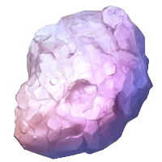

Rayquaza es un Pokémon legendario de color verde y blanco con una larga y serpentiforme estructura en su cuerpo. Posee dos aros en sus brazos y una cola en forma de cinta. Rayquaza reside en la estratosfera y es capaz de megaevolucionar a través de su cristal.
